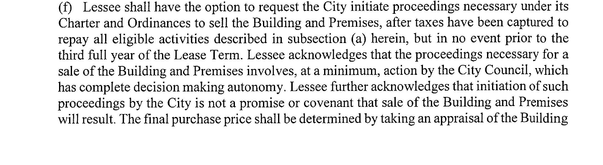

The Shuffle Lease Does Not Oblige the City to Sell
LANSING, Mich. — At the April 20, 2026 Committee of the Whole, Council Member Ryan Kost asked City Attorney Greg Venker to confirm a line from the 2020 lease that put the Lansing Shuffle Building on the August 4 ballot, and Venker confirmed it.
The line Kost read aloud was: “Initiation of such proceedings by the City is not a promise or covenant that sale of the Building and Premises will result.”
Venker’s response on the record was, “That’s correct. The city attorney at the time that drafted that made sure that council was not bound um to take an action. A future council was not bound to take a future action that they would have no uh,” at which point Kost cut in with “So we’re not bound to do this thing,” and Venker replied, “Correct, that that a prior council had bound them to, sorry.” That exchange appears in the Act-4-2026 discussion segment of the April 20 COW video, which was published by the City of Lansing on its official YouTube channel, and the lease paragraph Kost read from is on page 169 of the April 20, 2026 COW agenda packet (CivicClerk event 7804).
Reading Section (f)

Paragraph (f) on page 3 of the 2020 City Market Lease between the City of Lansing and Lansing Shuffleboard and Social Club, LLC has three clauses in order. First, the tenant has the option to request that the city initiate proceedings to sell the building, not earlier than the minimum period specified in the lease. Second, any sale “involves, at a minimum, action by the City Council, which has complete decision making autonomy.” Third, initiation “is not a promise or covenant that sale of the Building and Premises will result.”
The structured carve-out was not accidental. Venker told Kost that “the city attorney at the time that drafted that made sure that council was not bound” to a future action, which is the same reading the current city attorney put on the record in 2026.
Administration framing vs. contract language
Mayor Andy Schor offered what Schor called “the non-legal answer” at COW, describing the 2020 arrangement as a joint commitment by council and the tenant to “activate this space” and noting that the lease passed “7 to 1 at the time” after a year of trying to find a tenant who could take over the building. Schor closed the thought: “we said let’s let these guys try and then if they get it active then they can come back to us and ask about going to the ballot to keep this property in for this purpose.” The operative word in that sentence is ask, and ask preserves council discretion.
The staff report on page 129 of the same packet uses a different word: “Because Lansing Shuffleboard LL LLC requested to purchase the property, as outlined in the signed lease agreement, the City is obligated to begin the process to place the question of selling the property on the August 4, 2026 primary election ballot.” The obligation documented in the staff report is an obligation to begin the ballot process, not an obligation to complete a sale, and that distinction is the same distinction Section (f) draws.
The ballot, and the contract vote that follows
Under Lansing City Charter §8-403.6, which the voters adopted on November 4, 2025 and which took effect January 1, 2026 per §9-301, the sale of any park land requires a majority vote of the electors of the City of Lansing. The August 4 ballot question is what would establish that vote, and Charter §8-403.4 separately authorizes the sale of any city real property by “either the affirmative vote of the people or the affirmative vote of two-thirds (2/3) of the Council members serving.” That “or” means a yes vote on August 4 is, by itself, enough to clear the charter’s requirement for the sale.
Venker told council at COW that the buy-sell contract itself would still require six council votes: “It would be a six… six vote item by this body. Six yays in favor of the contract that contains the actual terms of the sale.” Venker did not identify which charter section or ordinance sets the six-vote threshold for the contract, and that part of the exchange stands on the public record as the city attorney’s on-record reading, without a specific citation to back it up from the meeting itself.
What Venker did specify on the record is that no prior council action bound the current or any future council to cast any particular vote.
Price formula, and proceeds direction
The 2018 Valbridge Property Advisors appraisal set the pre-improvement value of the Shuffle Building at $720,000, reproduced on page 197 of the April 20 COW agenda packet. The 2020 lease uses that figure, plus public-fund contributions, with a return on equity at a rate not specified in the lease itself, and Venker confirmed on the record that the city cannot override the formula without breaching the contract.
The same Venker exchange established that the city can still direct where any sale proceeds go, because the lease does not dictate that the money flows to the general fund. The mayor can send down an appropriation assigning proceeds to the parks department, and council can accept or reject that appropriation on the merits.
Council’s remaining authority at each post-August-4 vote is discretion over terms rather than authority to override the locked-in price formula, and whether the price the public consented to in 2018 is still the price the public would consent to in 2026 or 2027 remains open for the council to consider.
Framing gap
Public speakers at the April 20 meeting described the city’s position as “keeping our word,” and Kost, from the dais, characterized the framing in circulation: “It was sold as a city promise that we would do this process of selling.”
That framing does not appear in Section (f), it does not appear in the staff report on page 129, and it does not appear in Schor’s COW language, which used “ask” rather than “promise.” It is what Kost heard from constituents and what the administration has not publicly disclaimed.
Whether the August 4 ballot question is the end of the process or the beginning of it depends on how council approaches each remaining vote. A council that reads Section (f) as the contract and Venker’s confirmation as the legal status quo will treat the post-ballot phase as its own deliberation, and a council that has told itself it made a promise to sell will treat the post-ballot phase as closing paperwork.
Going into the August 4 ballot, the question council members should sit with is whether they understand the space Section (f) preserved for them.
Sources
The April 20, 2026 Committee of the Whole agenda packet (CivicClerk event 7804) contains the 2020 City Market Lease paragraph (f) on page 169, the Fedewa-authored staff report beginning on page 129, the 2018 Valbridge $720,000 appraisal figure on page 197, and the continuation of Section (f)’s price formula on page 170. The April 20 COW video contains the Kost-Venker exchange in the Act-4-2026 discussion segment and the Schor “non-legal answer” passage in the same segment. The Lansing City Charter, adopted by voters on November 4, 2025 and effective January 1, 2026 per §9-301, is available as an official PDF prepared by City Clerk Chris Swope, and the sections cited in this post are §8-403.4 (real property sale authorization) and §8-403.6 (voter approval for park land). The 2020 City Market Lease between the City of Lansing and Lansing Shuffleboard and Social Club, LLC was executed September 8, 2020 (subsequently amended, with the January 7, 2021 First Amendment substituting Lansing Shuffleboard LL LLC as lessee), and paragraph (f) is reproduced at packet page 169.
Scope note
This post does not argue that the lease is void, that the 2020 negotiation was improper, or that the city has breached any obligation to the tenant. The tenant had the contractual right to request initiation, and the city has now honored that right by placing the question on the August 4 ballot. What Section (f) does not establish, and what no document cited here establishes, is any obligation on the city to ratify the sale once the ballot and any subsequent council votes have been reached.